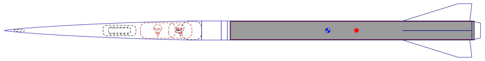
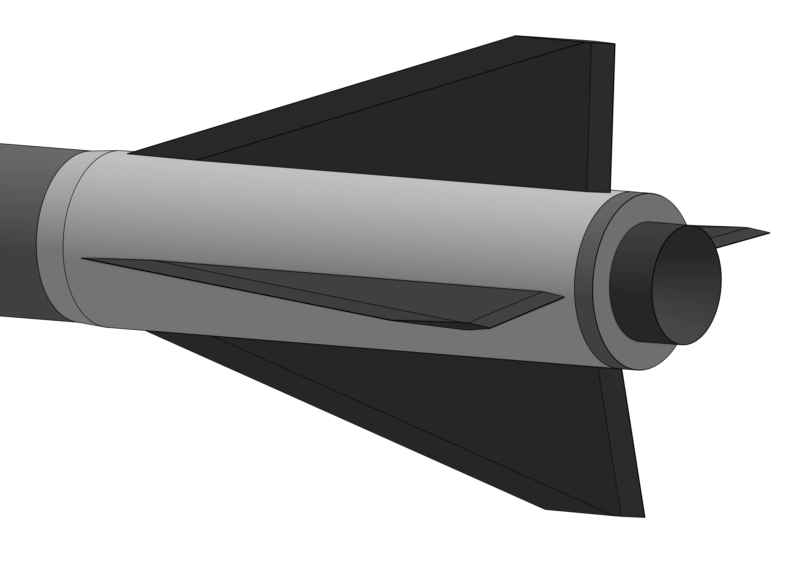

A direct attempt on the O3400 motor altitude record, currently standing at 75,000 ft. Built in conjunction with David Boyd, founder of the Victorian Rocketry Association, Australia's first rocketry organisation, targeting 81,000 ft at Mach 3.5. Launching at Tolarno Station, New South Wales, Q3 2026.

The fin shape is the primary lever for controlling both stability and apogee. On a sub-minimum diameter rocket, even millimetre changes to fin geometry produce meaningful shifts in flight performance — stability margin, drag, and ultimately altitude are all directly coupled to the fin design.
The theoretically optimal fin for pure speed is an aggressively tapered swept design with the tip chord well behind the aft edge of the root chord. The problem is that this geometry is significantly more susceptible to flutter during motor burn, and more likely to break on landing — which matters because any damage that makes the vehicle unrepairable in the field forfeits the record certification.
The finalised design is a tapered swept fin — closer to a clipped delta than a pure taper — 340mm long and 88mm tall, with a sweep angle exceeding 70°. Compared to the 98mm motor diameter, this is an aggressive geometry. The boat tail on the CTI casing protects the fin roots on landing while also improving aerodynamic performance.
Wind limits are set at 2–3 m/s — half of what a typical sounding rocket launches in. This is a deliberate stability trade: lower stability margin means less fin area, which means less drag, which means more altitude. We can afford to make this trade because unlike a certification flight, we can simply wait for the right conditions.

Fin geometry — OpenRocket simulation view
Designing a fin can for Mach 3.5 flight is a fundamentally different problem to conventional high-power rocketry. Three specific failure modes had to be addressed before manufacturing could begin.
Aerodynamic heating. At Mach 3.5 the fin surfaces experience significant aeroheating — sufficient to approach the glass transition temperature of standard carbon epoxy systems. The mitigation is a post-cure cycle after lamination, raising the glass transition point of the matrix resin above the expected thermal exposure. Given the vehicle only spends a fraction of a second at peak velocity, this is sufficient.
Laminate peel. The intense aerodynamic forces at Mach 3.5 create peel loads at the leading and trailing edges of the fin laminates — essentially trying to split the carbon layers apart. This is addressed by laminating additional epoxy resin into these regions, reinforcing the areas most exposed to peel loading.
Fin flutter. Flutter is the dominant concern — an aeroelastic instability where aerodynamic forces drive the fins into resonance with their own natural frequency. The result is catastrophic and instantaneous. Flutter calculations were run on both 3mm and 4mm thick fin options. 3mm fins would almost certainly flutter at Mach 3.5. 4mm is the minimum viable thickness, and the thickness chosen.
The fins bond directly to a carbon composite sleeve, which bonds directly to the motor casing and is blended into the motor tube. There are no mechanical fasteners, no bolts, no stress concentrations at the fin root. At Mach 3.5, every mechanical interface is a liability — the co-cured sleeve removes them entirely, making the fins and motor tube a single structural element.
The fin can is completed with a four-layer resin infused tip-to-tip layup. Resin infusion was chosen over wet layup specifically to eliminate air bubbles and ensure perfect fibre alignment at the leading and trailing edges — the regions most critical to resisting peel loading. The result is a lighter, stronger, more consistent laminate. A post-cure cycle finishes the assembly before bonding to the motor casing.
The finished fin can will, in theory, survive Mach 3.5 flight. We will find out in Q3 2026.
Design is complete. Fin geometry is finalised, flutter margins are established, and the manufacturing sequence is defined. Manufacturing begins shortly, with the launch window at Tolarno Station targeted for Q3 2026.
This page will be updated as manufacturing progresses and hardware is produced. Stay tuned.